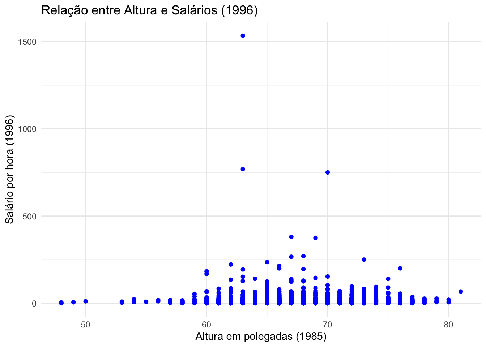

library(rio)
heightwage <- import(file = "../dados/heightwage.dta")Exercício 3 — Regressão e testes de hipótese (solução)
Entrega original: 07/11/2024.
Questão 1) Persico, Postlewaite e Silverman (2004) analisaram dados da National Longitudinal Survey of Youth (NLSY) da coorte de 1979 para avaliar a relação entre altura e salários de homens brancos. Aqui, exploramos a relação entre altura e salários para a amostra completa, que inclui homens e mulheres de todas as raças. O NLSY é uma amostra nacionalmente representativa de 12.686 jovens homens e mulheres que tinham entre 14 e 22 anos quando foram entrevistados pela primeira vez em 1979. Esses indivíduos foram entrevistados anualmente até 1994 e bianualmente desde então. A Tabela 4.7 descreve as variáveis do arquivo heightwage.dta que utilizaremos nesta questão.
Tabela 4.7: Variáveis usadas na questão (heightwage.dta)
| Variável | Descrição |
|---|---|
| wage96 | Salário por hora (em dólares) em 1996 |
| height85 | Altura adulta: altura (em polegadas) medida em 1985 |
a. Crie um gráfico de dispersão dos salários adultos em relação à altura adulta. O que esse gráfico sugere sobre a relação entre altura e salários?
library(ggplot2)
ggplot(heightwage, aes(x = height85, y = wage96)) +
geom_point(color = "blue") +
labs(title = "Relação entre Altura e Salários (1996)",
x = "Altura em polegadas (1985)",
y = "Salário por hora (1996)") +
theme_minimal()
Resposta: a nuvem de pontos é muito dispersa e há alguns salários extremamente altos (valores atípicos). Visualmente, a relação entre altura e salário parece fraca, se é que existe; o gráfico sozinho não permite concluir muito, o que motiva estimar a regressão.
b. Estime uma regressão OLS em que o salário adulto é a variável dependente e a altura adulta é a variável explicativa para todos os respondentes. Relate a equação da regressão estimada e interprete os resultados, explicando em particular o que o valor-p significa.
# Estimando a regressão OLS
modelo_ols <- lm(wage96 ~ height85, data = heightwage)
# Relatando os resultados da regressão
summary(modelo_ols)
Call:
lm(formula = wage96 ~ height85, data = heightwage)
Residuals:
Min 1Q Median 3Q Max
-17.26 -7.21 -3.38 1.95 1520.48
Coefficients:
Estimate Std. Error t value Pr(>|t|)
(Intercept) -6.97678 5.55895 -1.255 0.209503
height85 0.31475 0.08239 3.820 0.000135 ***
---
Signif. codes: 0 '***' 0.001 '**' 0.01 '*' 0.05 '.' 0.1 ' ' 1
Residual standard error: 27.68 on 6711 degrees of freedom
(5973 observations deleted due to missingness)
Multiple R-squared: 0.00217, Adjusted R-squared: 0.002021
F-statistic: 14.59 on 1 and 6711 DF, p-value: 0.0001346# Estimando a regressão OLS com stargazer
library(stargazer)
stargazer(modelo_ols,
type = "text")
===============================================
Dependent variable:
---------------------------
wage96
-----------------------------------------------
height85 0.315***
(0.082)
Constant -6.977
(5.559)
-----------------------------------------------
Observations 6,713
R2 0.002
Adjusted R2 0.002
Residual Std. Error 27.678 (df = 6711)
F Statistic 14.593*** (df = 1; 6711)
===============================================
Note: *p<0.1; **p<0.05; ***p<0.01Resposta:
O valor estimado do intercepto é −6.98, o que significa que, de acordo com esse modelo, para uma pessoa com altura zero (o que não é realista), o salário previsto seria -6.98 dólares por hora. Embora o valor não tenha um significado prático, ele é importante para definir a reta da regressão.
O coeficiente estimado para a altura é 0.315. Isso significa que cada polegada a mais de altura está associada, em média, a um salário por hora cerca de 31,5 centavos maior. Como este é um modelo com uma única variável explicativa, não há outras variáveis sendo “mantidas constantes”: o coeficiente resume a associação bruta entre altura e salário. A equação estimada é \(\widehat{wage96} = -6{,}98 + 0{,}315 \times height85\).
O valor-p associado ao coeficiente de height85 é 0.000135: se a verdadeira associação entre altura e salário fosse zero, seria muito improvável (probabilidade de cerca de 0,01%) obter uma estimativa tão distante de zero quanto a observada. Por isso rejeitamos a hipótese nula ao nível de 5%. Isso indica uma associação estatisticamente significativa, não necessariamente um efeito causal: a altura pode estar correlacionada com outros fatores (como sexo, que afeta tanto a altura quanto o salário). O R² (0.00217) é baixo: a altura explica apenas uma pequena fração da variação dos salários.
COMPLEMENTO
Tabela completa
| Variável | Tipo | Descrição |
|---|---|---|
| male | Numérico | Indicador de gênero: 1 para masculino, 0 para feminino. |
| white | Numérico | Indicador de raça: 1 se a pessoa é branca, 0 se não é branca. |
| black | Numérico | Indicador de raça: 1 se a pessoa é negra, 0 se não é negra. |
| hispanic | Numérico | Indicador de etnia: 1 se a pessoa é hispânica, 0 se não é hispânica. |
| mompro2 | Numérico | Indicador de ocupação da mãe: 1 se em ocupação profissional/gerencial, 0 caso contrário. |
| poppro2 | Numérico | Indicador de ocupação do pai: 1 se em ocupação profissional/gerencial, 0 caso contrário. |
| siblings | Contínuo | Número de irmãos/irmãs. |
| norest96 | Numérico | Indicador de residência no Nordeste em 1996: 1 se sim, 0 caso contrário. |
| norcen96 | Numérico | Indicador de residência no Centro-Norte em 1996: 1 se sim, 0 caso contrário. |
| south96 | Numérico | Indicador de residência no Sul em 1996: 1 se sim, 0 caso contrário. |
| west96 | Numérico | Indicador de residência no Oeste em 1996: 1 se sim, 0 caso contrário. |
| height81 | Contínuo | Altura na adolescência em polegadas. |
| height85 | Contínuo | Altura adulta em polegadas. |
| esteem80 | Contínuo | Escala de autoestima registrada em 1980. |
| athlets | Numérico | Indicador de participação em esportes no ensino médio: 1 se sim, 0 caso contrário. |
| wage96 | Contínuo | Salário por hora em 1996 (em dólares). |
| hgc96 | Contínuo | Maior grau de escolaridade concluído em 1996. |
| daded79 | Contínuo | Escolaridade do pai em anos. |
| momed79 | Contínuo | Escolaridade da mãe em anos. |
| age | Contínuo | Idade do indivíduo em 1996. |
| clubnum | Contínuo | Número de participações em clubes no ensino médio. |
Hipóteses do Modelo novo
O modelo inclui variáveis que, além da altura, podem impactar o salário do indivíduo. As hipóteses são:
Altura (height85): Indivíduos mais altos poderiam receber salários mais altos devido a estereótipos sociais e associações inconscientes de altura com competência ou autoridade.
Gênero (male): Gênero pode afetar o salário, com homens frequentemente recebendo salários mais altos devido a desigualdades no mercado de trabalho.
Raça e Etnia (white, black, hispanic): Disparidades salariais com base na raça e etnia são amplamente documentadas. Atenção: nesta base, todo respondente é classificado em exatamente uma das três categorias (white + black + hispanic = 1). Incluir as três dummies junto com o intercepto gera colinearidade perfeita (a “armadilha da variável dummy”); o R descarta automaticamente uma delas (hispanic aparece como NA), que passa a ser a categoria de referência.
Ocupação dos pais (mompro2, poppro2): Pais com ocupações profissionais podem fornecer mais recursos e redes de apoio, possivelmente refletindo em maiores salários.
Número de irmãos (siblings): Famílias com muitos filhos podem ter menos recursos para cada um, o que pode influenciar o nível de escolaridade e salário.
Escolaridade própria e dos pais (hgc96, daded79, momed79): Escolaridade é um dos fatores mais diretos na determinação de salários.
Idade (age): A experiência e o tempo no mercado de trabalho aumentam com a idade, impactando o salário.
Participação em atividades extracurriculares (clubnum): A participação em clubes pode ser um indicativo de habilidades sociais e redes que influenciam o sucesso no trabalho.
Por que esse Modelo é Melhor?
Este modelo é mais completo do que o modelo bivariado (usando apenas height85 como preditor), pois controla por fatores que podem estar correlacionados tanto com a altura quanto com o salário. A análise isolada de altura e salário pode levar a conclusões enviesadas por variáveis de confusão, como sexo e origem familiar. Ainda assim, incluir controles não transforma automaticamente o coeficiente em efeito causal: só eliminamos o viés das variáveis incluídas. Além disso, é preciso cuidado com variáveis que podem ser consequência da altura (como a escolaridade, se pessoas mais altas tiverem mais oportunidades na escola): controlar por elas pode “absorver” parte do efeito que queremos medir.
library(stargazer)
# Confirmando que cada respondente está em exatamente uma categoria de raça/etnia
table(heightwage$white + heightwage$black + heightwage$hispanic)
1
12686 # Estimando a regressão OLS com múltiplas variáveis
# (hispanic fica de fora: é a categoria de referência)
modelo_ols <- lm(wage96 ~ height85 + male + white + black + mompro2 + poppro2 + siblings + hgc96 + daded79 + momed79 + age + clubnum, data = heightwage)
# Resumo do modelo
stargazer(modelo_ols,
type = "text")
===============================================
Dependent variable:
---------------------------
wage96
-----------------------------------------------
height85 0.162
(0.149)
male 0.824
(1.211)
white -0.761
(1.284)
black -2.719*
(1.389)
mompro2 1.281
(1.450)
poppro2 0.724
(1.162)
siblings -0.226
(0.181)
hgc96 1.564***
(0.201)
daded79 0.164
(0.153)
momed79 -0.016
(0.195)
age -0.038
(0.184)
clubnum -0.376
(0.430)
Constant -16.094
(11.441)
-----------------------------------------------
Observations 5,312
R2 0.023
Adjusted R2 0.021
Residual Std. Error 29.901 (df = 5299)
F Statistic 10.529*** (df = 12; 5299)
===============================================
Note: *p<0.1; **p<0.05; ***p<0.01Interpretação
height85 (Altura): A altura tem um coeficiente positivo (0,162), mas não é estatisticamente significativa, sugerindo que, controlando as outras variáveis, a altura não tem um impacto claro no salário.
male (Gênero): O coeficiente para homens é positivo (0,824), mas também não é significativo. Isso indica que, nesse modelo, o efeito do gênero sobre o salário não é evidente.
black (Raça: Negro): O coeficiente para negros é -2,719, estatisticamente significativo a 10% (p<0,1). Como hispanic é a categoria de referência, ele indica que, em média, indivíduos negros ganham cerca de US$ 2,72 a menos por hora do que indivíduos hispânicos com as mesmas características nas demais variáveis do modelo. O coeficiente de white compara brancos a hispânicos e não é significativo.
hgc96 (Escolaridade): A escolaridade é fortemente significativa (p<0,01) e tem um coeficiente de 1,564, mostrando que um maior nível educacional está associado a um aumento significativo no salário.
Outras Variáveis (white, mompro2, poppro2, siblings, daded79, momed79, age, clubnum): Essas variáveis não apresentaram significância estatística, indicando que seus efeitos no salário não são claramente observáveis neste modelo.
Qualidade do Modelo (R² e F-Estatística): O valor de 𝑅² é 0,023, sugerindo que o modelo explica apenas uma pequena fração da variabilidade no salário. A estatística F é significativa (p<0,01), mostrando que o modelo geral tem alguma capacidade preditiva, mas o ajuste é baixo.
Resumo: A escolaridade (hgc96) é a variável com associação mais forte e significativa com o salário, e a diferença entre negros e hispânicos é marginalmente significativa. Depois dos controles, o coeficiente da altura cai à metade (de 0,315 para 0,162) e deixa de ser significativo, o que sugere que parte da associação bruta entre altura e salário se devia a outras variáveis (como sexo e escolaridade). Note também que o número de observações cai, porque o lm() descarta casos com dados faltantes em qualquer variável do modelo.
Questão 2) Os eleitores se preocupam com a economia, muitas vezes mais do que com qualquer outro tema. Não é surpresa, então, que os políticos invariavelmente argumentem que seu partido é o melhor para a economia. Quem está certo? Neste exercício, vamos olhar para os dados econômicos e do partido presidencial nos EUA contidos no arquivo PresPartyEconGrowth.dta para testar se há alguma diferença no desempenho econômico entre presidentes republicanos e democratas. Usaremos duas variáveis dependentes diferentes:
ChangeGDPpc: mudança no PIB real per capita em cada ano de 1962 a 2013 (em dólares ajustados pela inflação, disponíveis no Banco Mundial).Unemployment: taxa de desemprego em cada ano de 1947 a 2013 (disponível no Bureau of Labor Statistics).
library(rio)
PresPartyEconGrowth <- import(file = "../dados/PresPartyEconGrowth.dta")
names(PresPartyEconGrowth)[1] "Year" "LagDemPresident" "Unemployment" "ChangeGDPpc" Nossa variável independente é LagDemPresident. Esta variável é igual a 1 se o presidente do ano anterior era democrata e igual a 0 se o presidente do ano anterior era republicano. A ideia é que as políticas do presidente levam algum tempo para surtir efeito, de modo que o crescimento econômico em um determinado ano depende de quem foi o presidente no ano anterior.
a. Estime um modelo com a taxa de desemprego como variável dependente e LagDemPresident como variável independente. Interprete os coeficientes.
library(stargazer)
# Estimar o modelo de regressão
modelo <- lm(Unemployment ~ LagDemPresident, data = PresPartyEconGrowth)
# Ver o resumo do modelo
stargazer(modelo,
type = "text")
===============================================
Dependent variable:
---------------------------
Unemployment
-----------------------------------------------
LagDemPresident -0.955**
(0.388)
Constant 6.236***
(0.264)
-----------------------------------------------
Observations 67
R2 0.085
Adjusted R2 0.071
Residual Std. Error 1.583 (df = 65)
F Statistic 6.065** (df = 1; 65)
===============================================
Note: *p<0.1; **p<0.05; ***p<0.01Resposta:
Esses resultados indicam que, nos anos em que o presidente do ano anterior era democrata, a taxa de desemprego foi, em média, significativamente mais baixa.
O intercepto (6.2361) revela a taxa de desemprego média quando o presidente anterior era republicano (LagDemPresident = 0) é de aproximadamente 6,24%. Já o coeficiente de LagDemPresident (-0.9555), nos informa que quando o presidente anterior era democrata (LagDemPresident = 1), a taxa de desemprego tende a ser 0,96 pontos percentuais mais baixa, em média, do que quando o presidente anterior era republicano. Este coeficiente é estatisticamente significativo ao nível de 5% (p=0.0164)
b. Estime um modelo com o PIB per capita como variável dependente e LagDemPresident como variável independente. Interprete os coeficientes. Explique por que o tamanho da amostra difere do primeiro modelo.
# Estimar o modelo de regressão com ChangeGDPpc como variável dependente e LagDemPresident como variável independente
model_gdp <- lm(ChangeGDPpc ~ LagDemPresident, data = PresPartyEconGrowth)
# Exibir o resumo dos resultados da regressão
stargazer(model_gdp,
type = "text")
===============================================
Dependent variable:
---------------------------
ChangeGDPpc
-----------------------------------------------
LagDemPresident 219.991
(164.000)
Constant 481.125***
(111.416)
-----------------------------------------------
Observations 52
R2 0.035
Adjusted R2 0.015
Residual Std. Error 589.558 (df = 50)
F Statistic 1.799 (df = 1; 50)
===============================================
Note: *p<0.1; **p<0.05; ***p<0.01Resposta:
O intercepto (cerca de 481) é a variação média anual do PIB real per capita, em dólares, nos anos em que o presidente anterior era republicano. O coeficiente de LagDemPresident (cerca de 220) indica que, quando o presidente anterior era democrata, o PIB per capita cresceu em média cerca de US$ 220 a mais por ano. A diferença, porém, não é estatisticamente significativa (p ≈ 0,19).
O tamanho da amostra difere porque as séries têm períodos diferentes: o desemprego está disponível de 1947 a 2013 (67 anos), enquanto a variação do PIB per capita só existe de 1962 a 2013 (52 anos). O lm() exclui automaticamente os anos com dados faltantes na variável dependente.
c. Escolha um nível de significância e uma hipótese alternativa e indique, para cada modelo acima, se você rejeita ou não a hipótese nula.
Resposta:
Para decidir se rejeitamos ou não a hipótese nula, escolhemos, por exemplo, um nível de significância de α = 0,05 e analisamos os resultados de cada modelo com base nesse critério. (Em testes de hipótese nunca “aceitamos” a hipótese nula: no máximo, não temos evidência suficiente para rejeitá-la.)
Modelo 1: Taxa de desemprego como variável dependente
Hipótese nula (H₀): O coeficiente de
LagDemPresidenté igual a zero (não há diferença no desemprego entre anos após presidentes democratas e republicanos).Hipótese alternativa (H₁): O coeficiente de
LagDemPresidenté diferente de zero.
Resultado:
p-valor de
LagDemPresident: 0,0164Como o p-valor (0,0164) é menor que o nível de significância de 0,05, rejeitamos a hipótese nula (H₀). Portanto, há evidência de uma diferença estatisticamente significativa na taxa de desemprego. Isso é uma associação: para falar em efeito causal do partido, precisaríamos descartar outros fatores que mudam junto com o partido no poder (ciclos econômicos, choques externos etc.).
Modelo 2: PIB per capita como variável dependente
Hipótese nula (H₀): O coeficiente de
LagDemPresidenté igual a zero (não há diferença no crescimento do PIB per capita).Hipótese alternativa (H₁): O coeficiente de
LagDemPresidenté diferente de zero.
Resultado:
p-valor de
LagDemPresident: 0,186Como o p-valor (0,186) é maior que o nível de significância de 0,05, não rejeitamos a hipótese nula (H₀). Portanto, não há evidência suficiente para concluir que o crescimento do PIB per capita difere entre os dois partidos.
Resumo:
Modelo 1 (Desemprego): Rejeitamos a hipótese nula.
Modelo 2 (PIB per capita): Não rejeitamos a hipótese nula.
d. Explique com suas próprias palavras o que o valor-p significa para a variável LagDemPresident em cada modelo.
O valor-p indica a probabilidade de observarmos um coeficiente tão distante de zero quanto o estimado (ou mais), supondo que a hipótese nula seja verdadeira. Ele não é a probabilidade de a hipótese nula ser verdadeira.
Modelo 1 (Desemprego): O valor-p de 0,0164 significa que, se não houvesse diferença no desemprego entre os partidos, a chance de observarmos uma diferença tão grande quanto a estimada (ou maior) seria de 1,64%. Como esse valor é menor que 0,05, rejeitamos a hipótese nula.
Modelo 2 (PIB per capita): O valor-p de 0,186 indica que, se não houvesse diferença no crescimento do PIB per capita entre os partidos, a chance de observarmos uma diferença tão grande quanto a estimada (ou maior) seria de 18,6%. Como esse valor é maior que 0,05, não rejeitamos a hipótese nula.
COMPLEMENTO
Tabela completa
| Variável | Tipo | Descrição |
|---|---|---|
| Year | Contínuo | Ano da observação, variando de 1947 em diante. |
| LagDemPresident | Numérico | Indicador de presidente democrata anterior: 1 se o presidente anterior era democrata, 0 caso contrário. |
| Unemployment | Contínuo | Taxa de desemprego anual nos EUA, em porcentagem. |
| ChangeGDPpc | Contínuo | Variação anual do PIB real per capita, em dólares (ajustados pela inflação). |
# Modelo com o crescimento do PIB per capita como controle adicional
library(stargazer)
modelo_ajustado <- lm(Unemployment ~ LagDemPresident + ChangeGDPpc, data = PresPartyEconGrowth)
# Resumo do modelo ajustado
stargazer(modelo_ajustado,
type="text")
===============================================
Dependent variable:
---------------------------
Unemployment
-----------------------------------------------
LagDemPresident -0.667
(0.432)
ChangeGDPpc -0.001**
(0.0004)
Constant 6.866***
(0.338)
-----------------------------------------------
Observations 52
R2 0.147
Adjusted R2 0.113
Residual Std. Error 1.526 (df = 49)
F Statistic 4.235** (df = 2; 49)
===============================================
Note: *p<0.1; **p<0.05; ***p<0.010.1 Resumo Final
Neste modelo, o crescimento do PIB per capita tem associação negativa e significativa com o desemprego, enquanto o coeficiente do partido do presidente anterior diminui e deixa de ser significativo (p ≈ 0,13). Atenção à interpretação: se o partido do presidente afeta o desemprego por meio do crescimento econômico, o PIB é um mediador, e controlar por ele elimina justamente parte do efeito do partido que queríamos medir. Além disso, este modelo usa apenas os 52 anos com dados de PIB, então não é diretamente comparável ao modelo do item (a).